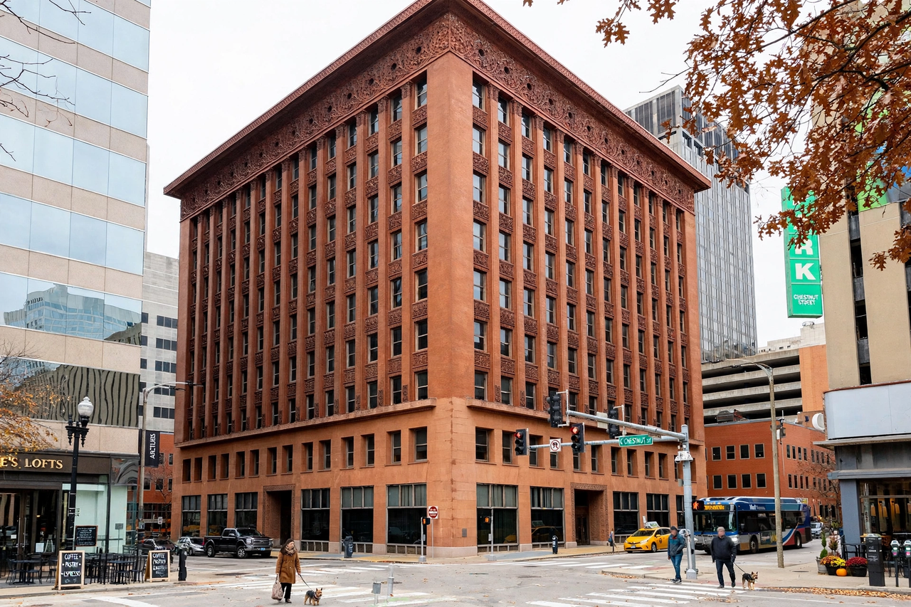

Louis Sullivan
Louis Henry Sullivan (September 3, 1856 – April 14, 1924) was an American architect, regarded as the "father of the skyscraper" and a founder of modernism. A leading figure of the Chicago School, he coined the maxim "form follows function" in his 1896 essay "The Tall Office Building Artistically Considered", and mentored Frank Lloyd Wright, who called him Lieber Meister ("beloved master").

| Born | September 3, 1856, Boston, Massachusetts, U.S. |
|---|---|
| Died | April 14, 1924 (aged 67), Chicago, Illinois, U.S. |
| Occupation | Architect |
| Practice | Adler & Sullivan |
| Notable works | Wainwright Building, Auditorium Building, Carson Pirie Scott Building, Guaranty Building |
Career
Sullivan studied briefly at the Massachusetts Institute of Technology and at the École des Beaux-Arts in Paris before joining the Chicago office of William Le Baron Jenney. In 1881 he became partner of the engineer Dankmar Adler, forming Adler & Sullivan. After the Great Chicago Fire the city boomed, and the firm produced more than a hundred buildings, including the Auditorium Building (1889) in Chicago, the Wainwright Building (1891) in St. Louis — among the first successful high-rises — and the Carson Pirie Scott Building (1899–1904) with its exuberant cast-iron ornament.
Style and philosophy
Sullivan sought an architecture expressive of modern American life and of the steel frame within. Rejecting applied historical styles, he articulated tall buildings in three parts — base, shaft, and attic — and clothed them in lush, original ornament derived from nature: seed-pods, vines, and geometric interlace, executed in terracotta and cast iron. His writings, including Kindergarten Chats (1901–02) and The Autobiography of an Idea (1924), set out a democratic, organic philosophy of design that deeply influenced twentieth-century architecture.
Later years
The partnership dissolved in 1895, and Sullivan's practice declined; his finest late works are the small "jewel box" banks of the Midwest, such as the National Farmer's Bank in Owatonna, Minnesota (1908). He died nearly penniless in a Chicago hotel room in 1924. His legacy was carried on by Wright and the Prairie School, and his designs inspired the bronze medallion of the Pritzker Architecture Prize.
See also
References
- Morrison, Hugh, Louis Sullivan: Prophet of Modern Architecture, 1935.
- Sullivan, Louis H., The Autobiography of an Idea, 1924.